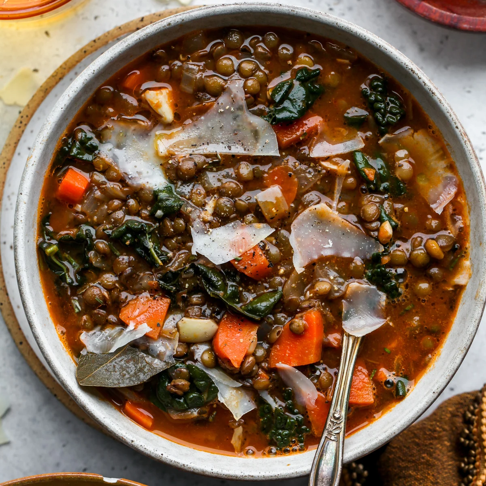

Home
Lentil Soup

Description
Lentil soup is a hearty and nutritious dish made from lentils, vegetables, and aromatic spices. It is a protein-packed, plant-based meal that is both satisfying and healthy, perfect for any time of the year.
Ingredients
- Dry lentils - 1 cup
- Carrot - 1 (chopped)
- Celery - 1 stalk (chopped)
- Onion - 1 (chopped)
- Garlic - 2 cloves (minced)
- Vegetable broth - 4 cups
- Cumin - 1 teaspoon
- Salt and pepper - to taste
Steps
- Rinse lentils under cold water and set aside.
- In a pot, sauté onion, garlic, carrot, and celery until softened.
- Add lentils, vegetable broth, and cumin to the pot.
- Bring to a boil, then reduce heat and simmer for 25-30 minutes.
- Season with salt and pepper, and blend part of the soup for a creamier texture if desired.
- Serve hot with a squeeze of lemon and crusty bread.